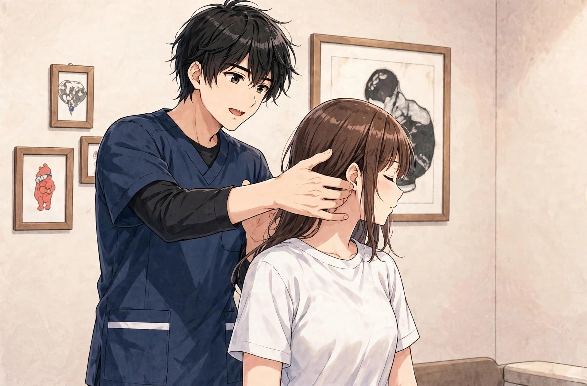

梅田で新年度の疲れの持ち越しに気になる首こり｜要因の整理とセルフケア、受診の目安ハウツー

阪急梅田駅の改札を出て、地下街の人波にのまれて歩く。オフィス街のビルに入ってデスクに向かい、夕方にはまた地下街を抜けて帰る。梅田で働く日の多くは、そんな移動と座りっぱなしの繰り返しです。4月は新しい部署やメンバー、通勤ルートの変わり目。3月の年度末の慌ただしさが抜けきらないまま、新しい日々が始まる人もいます。そうした時期に首のまわりが重く感じたり、朝起きたときに首がこわばったりすることはないでしょうか。ここでは、梅田で働く女性の日常をなぞりながら、首の重さの背景になりやすい場面、すきま時間のひと工夫、病院へ相談するタイミングをたどります。
#梅田 新年度 首こり#新年度 疲れ 首こり#首こり セルフケア#梅田 女性専用 サロン 首こり
首まわりの重だるさとこわばり
朝の目覚めの首のこわばり。夕方、デスクから離れたときの首まわりの重だるさ。「首こり」と呼ばれる感じ方には、そんなふうに時間帯や場面ごとの顔があります。医学的な診断名ではなく、人によって気になる瞬間も、重さのあらわれ方も違います。オフィス街で一日中デスクに向かった日、阪急梅田駅から中崎町まで歩いた日、地下街の混雑のなか荷物を持って立った日。気になる日の共通点を探ると、自分の首の傾向が見えてきます。朝のこわばりは起き上がると少しずつやわらぎ、夕方の重だるさは一日の終わりに強まる。そんな時間帯の違いも、手がかりのひとつです。
比べたいのは、ふだんの自分との違い。新年度に入ってから気になり始めたのか、年度末から続いているのか。どんな日のあとに気になりやすいのか。そうした振り返りが、暮らし方を見直す手がかりになります。
梅田を歩く日の首の負担
年度末の慌ただしさ
3月は締め切り、引き継ぎ資料の準備、送別会が重なり、休む時間が取りにくい日が続きます。そんな慌ただしさの余韻が残ったまま4月に入り、新しい業務が始まると、首まわりの重だるさを覚える日が増える人もいます。無理のない予定を、意識的に組むことから始めてみましょう。
新しい人間関係と画面時間
新しい部署やメンバーとの関係では、気づかないうちに肩や首に力が入ったまま、長く過ごしがちです。慣れない業務では画面を見続ける時間が増え、うつむき気味の姿勢が続きます。緊張が長引けば、首のまわりがこわばった感じになる人もいます。もっとも、感じ方には個人差があり、緊張だけが理由とは限りません。
ラッシュと地下街
梅田ならではの負担が、通勤ラッシュと地下街の移動です。朝の御堂筋線やJR大阪駅周辺の混雑のなか、荷物を持って立つ時間が長くなれば、首や肩への負担は大きくなります。ホワイティうめだやディアモール大阪の地下街では、人波を避けながら進むため、無意識に首をすくめたり、荷物を持つ腕に力が入ったりしがちです。阪急梅田駅から中崎町まで歩く日は、歩く距離そのものより、信号待ちや人混みでの立ち止まりの繰り返しが負担の種になります。阪急三番街で買い物を済ませて帰る日は、荷物がさらに増えて重くなります。
朝晩の冷えと服装
4月から5月は、暖かい日と肌寒い日が入り交じります。朝晩の冷え込みが残る日、薄着で出かけると首元が冷え、首をすくめる姿勢が長く続きます。寒暖差の大きい日は、体の緊張がゆるんだり締まったりを繰り返し、首まわりの重だるさを覚えやすくなる人もいます。
地下街のひと息とセルフケア
仕事の区切りに
オフィスで過ごす日は、仕事の区切りごとに首を動かす時間を入れること。メールを送ったあと、資料を印刷しに行くとき、会議室へ移動するとき。そんな合図を決めておくと、1〜2時間も首を動かさずに過ごす日が減ります。首をゆっくり横に向ける、肩を大きく回す――それだけでもかまいません。痛みが出るほど強く動かす必要はありません。
乗り換えの合間
帰り道の地下街でも、ひと息つく余地はあります。乗り換えの合間にベンチへ座って背もたれに背中を預ける。エスカレーターに乗っているあいだ、肩の力を抜く。ホームで電車を待つあいだ、首をゆっくり回す。そんな短いひと息が、首まわりの緊張をほどきます。地下街の人混みを避け、少し遠回りの通路を選ぶのも、歩くペースを整える工夫です。
帰宅後の温めと荷物
帰宅したら、ぬるめのお湯に首までつかって体を温めるのもよいでしょう。湯船のなかで両腕を大きく回す、胸を開いて肩甲骨を寄せる。そんな小さな動きを挟むと、体が温まりやすくなります。蒸しタオルを首元に当てるのも、首の重さを感じる日の工夫のひとつです。蒸しタオルは熱すぎない温度で、気持ちよいと感じる程度に。
新年度は資料やノートパソコンで荷物が増える時期です。バッグを片方の肩だけで持ち続けると、首や肩への負担が偏ります。両手で持つ、リュックに替える――そんな工夫が役立ちます。通勤の電車では、つり革につかまって立つときに肩の力を抜く、座れたときは背もたれに背中を預ける。そうした小さな工夫も取り入れやすいものです。
眠る前の冷え対策
帰宅したら、まず温かい飲み物で体を休めましょう。新しい環境に慣れるまでは無理のない予定を心がけ、休む時間を意識的に入れること。寝る前は寝室を少し温め、首元が冷えないようにタオルや薄手の羽織るものを用意しておくと安心です。
首の重さに変化が重なったとき
首の重さに、気になる変化が重なってきたら、早めに医療機関へ相談を。たとえば首や腕のしびれ、強い痛み、頭痛やめまいが長引くとき。そんなサインがあるときは、ひとりで悩まず、整形外科などに相談するのが安心です。
重さが長引き、日々の手入れを続けても変わらない場合も、医療機関へ相談を。診察のときに伝えたいのは、いつ感じたか（朝・デスクワークのあと・夕方）、どんな重さか、いつから続いているか、眠りの様子、4月からの過ごし方。書き留めておくと、診察のときに話しやすくなります。
当店のご案内
ステラポラリスは女性専用・完全予約制のサロンで、大阪・梅田エリアのレンタルサロンで施術しています。開院は2026年11月4日。営業時間は月〜土の17:00〜22:00で、日曜はお休みです。施術内容はオイルマッサージ、美容整体の2つ。料金は90分10,000円。予約はLINEから受け付けています。
場所は大阪市北区堂山町12-5 ロイヤルハイツ梅田Ⅱ 303号室（レンタルサロンACE内）。中崎町駅から徒歩5分、阪急梅田駅から徒歩8分です。担当は施術歴30年・鍼灸師資格を持つセラピスト1名で、当店では鍼灸施術は行いません。